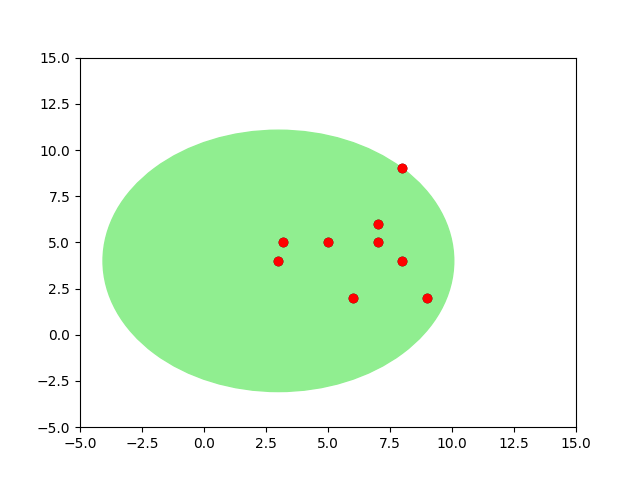
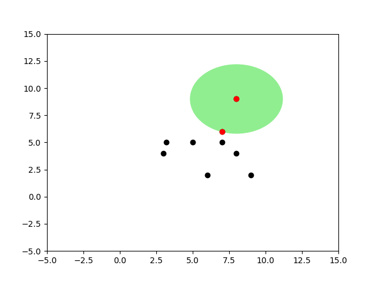
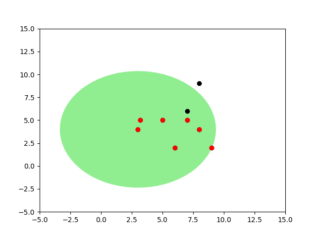
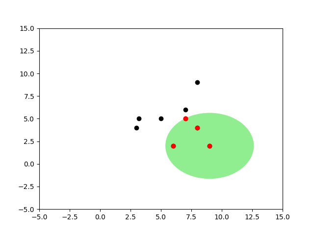
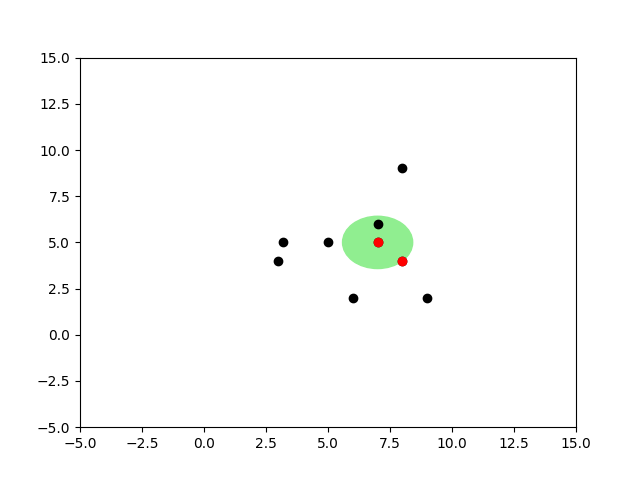
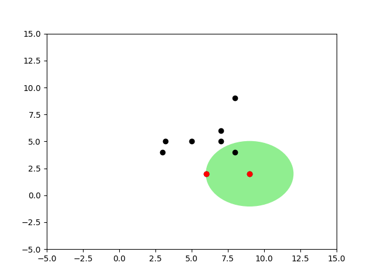
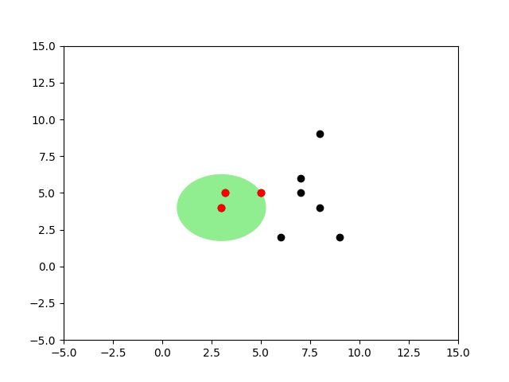
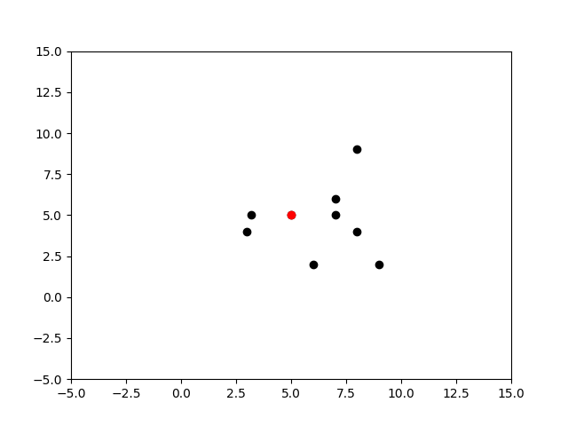
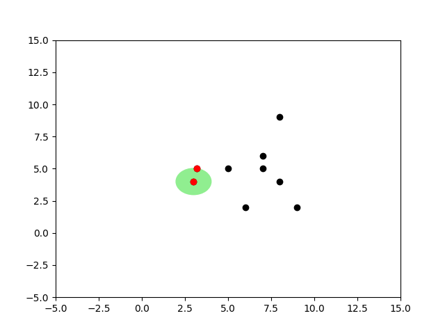

Yapay Öğrenim alanında örnek bazlı öğrenen algoritmalardan bilinen KNN, eğitim verinin kendisini sınıflama (classification) amaçlı olarak kullanır, yeni bir model ortaya çıkartmaz. Algoritma şöyle işler: etiketleri bilinen eğitim verisi alınır ve bir kenarda tutulur. Yeni bir veri noktası görülünce bu veriye geri dönülür ve o noktaya "en yakın'' k tane nokta bulunur. Daha sonra bu noktaların etiketlerine bakılır ve çoğunluğun etiketi ne ise, o etiket yeni noktanın etiketi olarak kabul edilir. Mesela elde 1 kategorisi altında [2 2], 2 kategorisi altında [5 5] var ise, yeni nokta [3, 3] için yakınlık açısından [2 2] bulunmalı ve etiket olarak 1 sonucu döndürülmelidir.
Üstte tarif edilen basit bir ihtiyaç, yöntem gibi görülebilir. Fakat yapay öğrenim ve yapay zeka çok boyutlarda örüntü tanıma (pattern recognition) ile uğraşır, ve milyonlarca satırlık veri, onlarca boyut (üstteki örnekte 2, fakat çoğunlukla çok daha fazla boyut vardır) işler hakikaten zorlaşabilir. Mesela görüntü tanımada veri M x N boyutundaki dijital imajlar (düzleştirilince \(M \cdot N\) boyutunda), ve onların içindeki resimlerin kime ait olduğu etiket bilgisi olabilir. KNN bu tür multimedya, çok boyutlu veri ortamında başarılı şekilde çalışabilmektedir. Ayrıca en yakın k komşunun içeriği tarifsel bilgi çıkarımı (knowledge extraction) amacıyla da kullanılabilir [2].
"En yakın'' sözü bir kordinat sistemi anlamına geliyor, ve KNN, aynen GMM ve diğer pek çok kordinatsal öğrenme yöntemi gibi eldeki çok boyutlu veri noktalarının elemanlarını bir kordinat sistemindeymiş gibi görür. Kıyasla mesela APriori gibi bir algoritma metin bazlı veriyle olduğu gibi çalışabilirdi.
Peki arama bağlamında, bir veri öbeği içinden en yakın noktaları bulmanın en basit yolu nedir? Listeyi baştan sonra taramak (kaba kuvvet yöntemi -brute force-) listedeki her nokta ile yeni nokta arasındaki mesafeyi teker teker hesaplayıp en yakın k taneyi içinden seçerdi, bu bir yöntemdir.. Bu basit algoritmanın yükü \(O(N)\)'dir. Eğer tek bir nokta arıyor olsaydık, kabul edilebilir olabilirdi. Fakat genellikle bir sınıflayıcı (classifier) algoritmasının sürekli işlemesi, mesela bir online site için günde milyonlarca kez bazı kararları alması gerekebilir. Bu durumda ve \(N\)'in çok büyük olduğu şartlarda, üstteki hız bile yeterli olmayacaktır.
Arama işlemini daha hızlı yapmanın yolları var. Akıllı arama algoritmaları kullanarak eğitim verilerini bir ağaç yapısı üzerinden tarayıp erişim hızını \(O(\log N)\)'e indirmek mümkündür.
K-D Ağaçları (k-d tree)
Bilgisayar bilimde K-D ağaçları (k-boyutlu ağaçlar kelimesinin kısaltılmışı) bir çok boyutlu bölümlere ayırma yaklaşımıdır, eldeki çok boyutlu veri noktaları bölgelere ayrılarak arama ile bulunmaları kolaylaştırılmaya uğraşılır. Bu yapı belli bir noktaya en yakın k nokta bulmaya yardımcı olur.
Yapı şöyledir: K-D ağaçları bir ikisel ağaç olarak kodlanır, ağacın her düğümü k boyutlu uzayı sadece tek bir kordinat üzerinden ikiye böler. Eğer 3 boyutta isek mesela 1. kordinat üzerinden bu ikiye bölüm yapılabilir. Ardından o düğümde seçilen kordinat üzerinden bakılan öğeden daha küçük olan veri noktaları sol dala büyük olanları sağ dala verilir. Bu işleyiş ağacın altına doğru benzer şekilde devam eder, her seviyede farklı bir kordinat seçilir.
# -*- coding: utf-8 -*-
from __future__ import print_function
import operator, math
from collections import deque
from functools import wraps
from bpq import BoundedPriorityQueue
class Node(object):
def __init__(self, data=None, left=None, right=None):
self.data = data
self.left = left
self.right = right
@property
def is_leaf(self):
return (not self.data) or \
(all(not bool(c) for c, p in self.children))
def preorder(self):
if not self:
return
yield self
if self.left:
for x in self.left.preorder():
yield x
if self.right:
for x in self.right.preorder():
yield x
def inorder(self):
if not self:
return
if self.left:
for x in self.left.inorder():
yield x
yield self
if self.right:
for x in self.right.inorder():
yield x
def postorder(self):
if not self:
return
if self.left:
for x in self.left.postorder():
yield x
if self.right:
for x in self.right.postorder():
yield x
yield self
@property
def children(self):
if self.left and self.left.data is not None:
yield self.left, 0
if self.right and self.right.data is not None:
yield self.right, 1
def set_child(self, index, child):
if index == 0:
self.left = child
else:
self.right = child
def height(self):
min_height = int(bool(self))
return max([min_height] + [c.height()+1 for c, p in self.children])
def get_child_pos(self, child):
for c, pos in self.children:
if child == c:
return pos
def __repr__(self):
return '<%(cls)s - %(data)s>' % \
dict(cls=self.__class__.__name__, data=repr(self.data))
def __nonzero__(self):
return self.data is not None
__bool__ = __nonzero__
def __eq__(self, other):
if isinstance(other, tuple):
return self.data == other
else:
return self.data == other.data
def __hash__(self):
return id(self)
def require_axis(f):
@wraps(f)
def _wrapper(self, *args, **kwargs):
if None in (self.axis, self.sel_axis):
raise ValueError('%(func_name) requires the node %(node)s '
'to have an axis and a sel_axis function' %
dict(func_name=f.__name__, node=repr(self)))
return f(self, *args, **kwargs)
return _wrapper
class KDNode(Node):
def __init__(self, data=None, left=None, right=None, axis=None,
sel_axis=None, dimensions=None):
super(KDNode, self).__init__(data, left, right)
self.axis = axis
self.sel_axis = sel_axis
self.dimensions = dimensions
@require_axis
def add(self, point):
current = self
while True:
check_dimensionality([point], dimensions=current.dimensions)
if current.data is None:
current.data = point
return current
if point[current.axis] < current.data[current.axis]:
if current.left is None:
current.left = current.create_subnode(point)
return current.left
else:
current = current.left
else:
if current.right is None:
current.right = current.create_subnode(point)
return current.right
else:
current = current.right
@require_axis
def create_subnode(self, data):
return self.__class__(data,
axis=self.sel_axis(self.axis),
sel_axis=self.sel_axis,
dimensions=self.dimensions)
@require_axis
def find_replacement(self):
if self.right:
child, parent = self.right.extreme_child(min, self.axis)
else:
child, parent = self.left.extreme_child(max, self.axis)
return (child, parent if parent is not None else self)
def should_remove(self, point, node):
if not self.data == point:
return False
return (node is None) or (node is self)
@require_axis
def remove(self, point, node=None):
if not self:
return
if self.should_remove(point, node):
return self._remove(point)
if self.left and self.left.should_remove(point, node):
self.left = self.left._remove(point)
elif self.right and self.right.should_remove(point, node):
self.right = self.right._remove(point)
if point[self.axis] <= self.data[self.axis]:
if self.left:
self.left = self.left.remove(point, node)
if point[self.axis] >= self.data[self.axis]:
if self.right:
self.right = self.right.remove(point, node)
return self
@require_axis
def _remove(self, point):
if self.is_leaf:
self.data = None
return self
root, max_p = self.find_replacement()
tmp_l, tmp_r = self.left, self.right
self.left, self.right = root.left, root.right
root.left, root.right = tmp_l if tmp_l is not root else self, tmp_r if tmp_r is not root else self
self.axis, root.axis = root.axis, self.axis
if max_p is not self:
pos = max_p.get_child_pos(root)
max_p.set_child(pos, self)
max_p.remove(point, self)
else:
root.remove(point, self)
return root
@property
def is_balanced(self):
left_height = self.left.height() if self.left else 0
right_height = self.right.height() if self.right else 0
if abs(left_height - right_height) > 1:
return False
return all(c.is_balanced for c, _ in self.children)
def rebalance(self):
return create([x.data for x in self.inorder()])
def axis_dist(self, point, axis):
return math.pow(self.data[axis] - point[axis], 2)
def dist(self, point):
r = range(self.dimensions)
return sum([self.axis_dist(point, i) for i in r])
def search_knn(self, point, k, dist=None):
if dist is None:
get_dist = lambda n: n.dist(point)
else:
get_dist = lambda n: dist(n.data, point)
results = BoundedPriorityQueue(k)
self._search_node(point, k, results, get_dist)
# We sort the final result by the distance in the tuple
# (<KdNode>, distance)
BY_VALUE = lambda kv: kv[1]
return sorted(results.items(), key=BY_VALUE)
def _search_node(self, point, k, results, get_dist):
if not self:
return
nodeDist = get_dist(self)
results.add((self, nodeDist))
split_plane = self.data[self.axis]
plane_dist = point[self.axis] - split_plane
plane_dist2 = plane_dist * plane_dist
if point[self.axis] < split_plane:
if self.left is not None:
self.left._search_node(point, k, results, get_dist)
else:
if self.right is not None:
self.right._search_node(point, k, results, get_dist)
if plane_dist2 < results.max() or results.size() < k:
if point[self.axis] < self.data[self.axis]:
if self.right is not None:
self.right._search_node(point, k, results, get_dist)
else:
if self.left is not None:
self.left._search_node(point, k, results, get_dist)
@require_axis
def search_nn(self, point, dist=None):
return next(iter(self.search_knn(point, 1, dist)), None)
@require_axis
def search_nn_dist(self, point, distance, best=None):
if best is None:
best = []
if self.dist(point) < distance:
best.append(self)
children = sorted(self.children, key=lambda c_p1: c_p1[0].dist(point))
for child, p in children:
if self.axis_dist(point, self.axis) < math.pow(distance, 2):
child.search_nn_dist(point, distance, best)
return best
@require_axis
def is_valid(self):
if not self:
return True
if self.left and self.data[self.axis] < self.left.data[self.axis]:
return False
if self.right and self.data[self.axis] > self.right.data[self.axis]:
return False
return all(c.is_valid() for c, _ in self.children) or self.is_leaf
def extreme_child(self, sel_func, axis):
max_key = lambda child_parent: child_parent[0].data[axis]
me = [(self, None)] if self else []
child_max = [c.extreme_child(sel_func, axis) for c, _ in self.children]
child_max = [(c, p if p is not None else self) for c, p in child_max]
candidates = me + child_max
if not candidates:
return None, None
return sel_func(candidates, key=max_key)
def create(point_list=None, dimensions=None, axis=0, sel_axis=None):
if not point_list and not dimensions:
raise ValueError('either point_list or dimensions must be provided')
elif point_list:
dimensions = check_dimensionality(point_list, dimensions)
sel_axis = sel_axis or (lambda prev_axis: (prev_axis+1) % dimensions)
if not point_list:
return KDNode(sel_axis=sel_axis, axis=axis, dimensions=dimensions)
point_list = list(point_list)
point_list.sort(key=lambda point: point[axis])
median = len(point_list) // 2
loc = point_list[median]
left = create(point_list[:median], dimensions, sel_axis(axis))
right = create(point_list[median + 1:], dimensions, sel_axis(axis))
return KDNode(loc, left, right, axis=axis, sel_axis=sel_axis, dimensions=dimensions)
def check_dimensionality(point_list, dimensions=None):
dimensions = dimensions or len(point_list[0])
for p in point_list:
if len(p) != dimensions:
raise ValueError('All Points in the point_list must have the same dimensionality')
return dimensions
def level_order(tree, include_all=False):
q = deque()
q.append(tree)
while q:
node = q.popleft()
yield node
if include_all or node.left:
q.append(node.left or node.__class__())
if include_all or node.right:
q.append(node.right or node.__class__())import bpq, kdtree
tree = kdtree.create([[2,3,4], [4,5,6], [5,3,2]])
print tree.search_nn( (1, 2, 3) )(<KDNode - [2, 3, 4]>, 3.0)x = np.random.random((1000,2)) * 100.
kx = [list(xxx) for xxx in x]
tree = kdtree.create(kx)
kres = tree.search_knn( [39, 39], k=7 )
for kx in kres: print kx(<KDNode - [37.944809008167091, 36.859556115064997]>, 5.694928053800966)
(<KDNode - [36.282279773622861, 39.25727857203173]>, 7.452195492486094)
(<KDNode - [36.011835939092215, 39.387237685986818]>, 9.07907748034933)
(<KDNode - [38.766178732185438, 34.670053651771802]>, 18.803107763817117)
(<KDNode - [39.443975626797602, 34.581772823651235]>, 19.7178457390171)
(<KDNode - [42.733856969186199, 36.292326352854367]>, 21.27318444578728)
(<KDNode - [43.489959416330848, 37.855783990677935]>, 21.468965836286962)Küre Agaçları (Ball Tree, BT)
Bir noktanın diğer noktalara yakın olup olmadığının hesabında yapılması gereken en pahalı işlem nedir? Mesafe hesabıdır. BT algoritmasının püf noktası bu hesabı yapmadan, noktalara değil, noktaları kapsayan "kürelere" bakarak hız kazandırmasıdır. Noktaların her biri yerine o noktaları temsil eden kürenin pivot noktasına (bu nokta küre içindeki noktaların ortalamasal olarak merkezi de olabilir, herhangi bir başka nokta da) bakılır, ve oraya olan mesafeye göre bir küre altındaki noktalara olabilecek en az ve en fazla uzaklık hemen anlaşılmış olur.
Not: Küre kavramı üç boyutta anlamlı tabii ki, iki boyutta bir çemberden bahsetmek lazım, daha yüksek boyutlarda ise merkezi ve çapı olan bir "hiper yüzeyden'' bahsetmek lazım. Tarifi kolaylaştırdığı için çember ve küre tanımlarını kullanıyoruz.
Mesela elimizde alttaki gibi noktalar var ve küreyi oluşturduk.
Bu küreyi kullanarak küre dışındaki herhangi bir nokta \(q\)'nun küredeki "diğer tüm noktalar \(x\)'e" olabileceği en az mesafenin ne olacağını üçgensel eşitsizlik ile anlayabiliriz.
Üçgensel eşitsizlik
\[ |x-y| \le |x-z| + |z-y| \]
Operatör \(| |\) norm anlamına gelir ve uzaklık hesabının genelleştirilmiş halidir. Konu hakkında daha fazla detay {} ders notlarında. Kısaca söylenmek istenen iki nokta arasında direk gitmek yerine yolu uzatırsak, mesafenin artacağıdır. Tabii uzaklık, yol, nokta gibi kavramlar tamamen soyut matematiksel ortamda da işleyecek şekilde ayarlanmıştır. Mesela mesafe (norm) kavramını değiştirebiliriz, Öklitsel yerine Manhattan mesafesi kullanırız (blok mesafesi, binalar etrafından dolaşılıyor, direk gidiş yok), fakat bu kavram bir norm olduğu ve belirttiğimiz uzayda geçerli olduğu için üçgensel eşitsizlik üzerine kurulmuş tüm diğer kurallar geçerli olur.
Şimdi diyelim ki dışarıdaki bir \(q\) noktasından bir küre içindeki diğer tüm \(x\) noktalarına olan mesafe hakkında bir şeyler söylemek istiyoruz. Üstteki şekilden bir üçgensel eşitsizlik çıkartabiliriz,
\[ |x-c| + |x-q| \ge |q-c| \]
Bunun doğru bir ifade olduğunu biliyoruz. Peki şimdi yarıçapı bu işe dahil edelim, çünkü yarıçap hesabı bir kere yapılıp küre seviyesinde depolanacak ve bir daha hesaplanması gerekmeyecek, yani algoritmayı hızlandıracak bir şey olabilir bu, o zaman eğer \(|x-c|\) yerine yarıçapı (radius) kullanırsak, eşitsizlik hala geçerli olur, sol taraf zaten büyüktü, şimdi daha da büyük olacak,
\[ radius + |x-q| \ge |q-c| \]
Bunu nasıl böyle kesin bilebiliyoruz? Çünkü BT algoritması radius'u \(|x-c|\)'ten kesinlikle daha büyük olacak şekilde seçer). Şimdi yarıçapı sağa geçirelim,
\[ |x-q| \ge |q-c| - radius \]
Böylece güzel bir tanım elde ettik. Yeni noktanın küredeki herhangi bir nokta \(x\)'e olan uzaklığı, yeni noktanın pivota olan uzaklığının yarıçapı çıkartılmış halinden muhakkak fazladır. Yani bu çıkartma işleminden ele geçen rakam yeni noktanın \(x\)'e uzaklığına bir "alt sınır (lower bound)" olarak kabul edilebilir. Diğer tüm mesafeler bu rakamdan daha büyük olacaktır. Ne elde ettik? Sadece bir yeni nokta, pivot ve yarıçap kullanarak küredeki "diğer tüm noktalar hakkında" bir irdeleme yapmamız mümkün olacak. Bu noktalara teker teker bakmamız gerekmeyecek. Bunun nasıl ise yaradığını algoritma detaylarında göreceğiz.
Benzer şekilde
Bu ne diyor?
\[ |q-c| + |x-c| \ge |q-x| \]
\(|x-c|\) yerine yarıçap kullanırsak, sol taraf büyüyeceği için büyüklük hala büyüklük olarak kalır,
\[ |q-c| + radius \ge |q-x| \]
Ve yine daha genel ve hızlı hesaplanan bir kural elde ettik (önceki ifadeye benzemesi için yer düzenlemesi yapalım)
\[ |q-x| \le |q-c| + radius \]
Bu ifade ne diyor? Yeni noktanın pivota olan uzaklığına yarıçap "eklenirse'' bu uzaklıktan, büyüklükten daha büyük bir yeni nokta / küre mesafesi olamaz, küredeki hangi nokta olursa olsun. Bu eşitsizlik te bize bir üst sınır (upper bound) vermiş oldu.
Algoritma ball_knn\(\left(PS^{in},node\right)\)
Eğer alttaki şart geçerli ise node içindeki bir noktanın daha önce keşfedilmiş \(k\) en yakın komşudan daha yakın olması imkansızdır
if \(D^{node}_{minp} \ge D_{sofar}\) return \(PS_{in}\) değişmemiş halde;
else if \(node\) bir çocuk noktası ise
Her \(\forall x \in points(node)\) için
if \(\left( |x-q| < D_{sofar} \right)\), basit lineer arama yapif \(|PS^{out}| == k+1\) o zaman en uzak olan komşuyu \(PS^{out}\)'tan çıkart ve \(D_{sofar}\)'i güncelleEğer uç nokta değil ise iki çocuk düğümden daha yakın olanını incele, sonra daha uzakta olanına bak. büyük bir ihtimalle arama devam ettirilirse bu arama kendiliğinden kesilecektir.
else
ball_knn(\(PS^{in},node_1)\);ball_knn(\(PS^{temp},node_2);\)Küre Ağaçları (BT) metotu önce küreleri, ağaçları oluşturmalıdır. Bu küreler hiyerarşik şekilde planlanır, tüm noktaların içinde olduğu bir "en üst küre" vardır her kürenin iki tane çocuk küresi olabilir. Belli bir (dışarıdan tanımlanan) minimum \(r_{min}\) veri noktasına gelinceye kadar sadece noktaları geometrik olarak kapsamakla görevli küreler oluşturulur, küreler noktaları sahiplenmezler. Fakat bu \(r_{min}\) sayısına erişince (artık oldukça alttaki) kürelerin üzerine noktalar konacaktır.
Önce tek kürenin oluşturuluşuna bakalım. Bir küre oluşumu için eldeki veri içinden herhangi bir tanesi pivot olarak kabul edilebilir. Daha sonra bu pivot'tan diğer tüm noktalara olan uzaklık ölçülür, ve en fazla, en büyük olan uzaklık yarıçap olarak kabul edilir (her şeyi kapsayabilmesi için).
Not: Bu arada "tüm diğer noktalara bakılması" dedik, bundan kaçınmaya çalışmıyor muyduk? Fakat dikkat, "küre oluşturulması" evresindeyiz, k tane yakın nokta arama evresinde değiliz. Yapmaya çalıştığımız aramaları hızlandırmak - eğitim / küre oluşturması bir kez yapılacak ve bu eğitilmiş küreler bir kenarda tutulacak ve sürekli aramalar için ardı ardına kullanılacaklar.
Küreyi oluşturmanın algoritması şöyledir: verilen noktalar içinde herhangi birisi pivot olarak seçilir. Sonra bu noktadan en uzakta olan nokta \(f_1\), sonra \(f_1\)'den en uzakta olan nokta \(f_2\) seçilir. Sonra tüm noktalara teker teker bakılır ve \(f_1\)'e yakın olanlar bir gruba, \(f_2\)'ye yakın olanlar bir gruba ayrılır.
import balltree, pprint
points = np.array([[3.,3.],[2.,2.]])
q = [1.,1.]
print 'diff', points-q
print 'dist', balltree.dist(points,q)diff [[ 2. 2.]
[ 1. 1.]]
dist [ 2.82842712 1.41421356]# k-nearest neighbor Ball Tree algorithm in Python
import itertools, numpy as np
__rmin__ = 2
def dist(vect,x):
return np.fromiter(itertools.imap
(np.linalg.norm, vect-x),dtype=np.float)
def norm(x,y): return np.linalg.norm(x-y)
# node: [pivot, radius, points, [child1,child2]]
def new_node():
return [None,None,None,[None,None]]
def zero_if_neg(x):
if x < 0: return 0
else: return x
def form_tree(points,node,all_points,plot_tree=False):
pivot = points[0]
radius = np.max(dist(points,pivot))
if plot_tree: plot_circles(pivot, radius, points, all_points)
node[0] = pivot
node[1] = radius
if len(points) <= __rmin__:
node[2] = points
return
idx = np.argmax(dist(points,pivot))
furthest = points[idx,:]
idx = np.argmax(dist(points,furthest))
furthest2 = points[idx,:]
dist1=dist(points,furthest)
dist2=dist(points,furthest2)
diffs = dist1-dist2
p1 = points[diffs <= 0]
p2 = points[diffs > 0]
node[3][0] = new_node() # left child
node[3][1] = new_node() # right child
form_tree(p1,node[3][0],all_points)
form_tree(p2,node[3][1],all_points)
# knn: [min_so_far, [points]]
def search_tree(new_point, knn_matches, node, k):
pivot = node[0]
radius = node[1]
node_points = node[2]
children = node[3]
# calculate min distance between new point and pivot
# it is direct distance minus the radius
min_dist_new_pt_node = norm(pivot,new_point) - radius
# if the new pt is inside the circle, its potential minimum
# distance to a random point inside is zero (hence
# zero_if_neg). we can only say so much without looking at all
# points (and if we did, that would defeat the purpose of this
# algorithm)
min_dist_new_pt_node = zero_if_neg(min_dist_new_pt_node)
knn_matches_out = None
# min is greater than so far
if min_dist_new_pt_node >= knn_matches[0]:
# nothing to do
return knn_matches
elif node_points != None: # if node is a leaf
print knn_matches_out
knn_matches_out = knn_matches[:] # copy it
for p in node_points: # linear scan
if norm(new_point,p) < radius:
knn_matches_out[1].append([list(p)])
if len(knn_matches_out[1]) == k+1:
tmp = [norm(new_point,x) \
for x in knn_matches_out[1]]
del knn_matches_out[1][np.argmax(tmp)]
knn_matches_out[0] = np.min(tmp)
else:
dist_child_1 = norm(children[0][0],new_point)
dist_child_2 = norm(children[1][0],new_point)
node1 = None; node2 = None
if dist_child_1 < dist_child_2:
node1 = children[0]
node2 = children[1]
else:
node1 = children[1]
node2 = children[0]
knn_tmp = search_tree(new_point, knn_matches, node1, k)
knn_matches_out = search_tree(new_point, knn_tmp, node2, k)
return knn_matches_out
points = np.array([[3.,4.],[5.,5.],[9.,2.],[3.2,5.],[7.,5.],
[8.,9.],[7.,6.],[8,4],[6,2]])
tree = balltree.new_node()
balltree.form_tree(points,tree,all_points=points)
pp = pprint.PrettyPrinter(indent=4)
print "tree"
pp.pprint(tree)
newp = np.array([7.,7.])
dummyp = [np.Inf,np.Inf] # it should be removed immediately
res = balltree.search_tree(newp,[np.Inf, [dummyp]], tree, k=2)
print "done", restree
[ array([ 3., 4.]),
7.0710678118654755,
None,
[ [ array([ 8., 9.]),
3.1622776601683795,
array([[ 8., 9.],
[ 7., 6.]]),
[None, None]],
[ array([ 3., 4.]),
6.324555320336759,
None,
[ [ array([ 9., 2.]),
3.6055512754639891,
None,
[ [ array([ 7., 5.]),
1.4142135623730951,
array([[ 7., 5.],
[ 8., 4.]]),
[None, None]],
[ array([ 9., 2.]),
3.0,
array([[ 9., 2.],
[ 6., 2.]]),
[None, None]]]],
[ array([ 3., 4.]),
2.2360679774997898,
None,
[ [ array([ 5., 5.]),
0.0,
array([[ 5., 5.]]),
[None, None]],
[ array([ 3., 4.]),
1.019803902718557,
array([[ 3. , 4. ],
[ 3.2, 5. ]]),
[None, None]]]]]]]]
None
done [1.0, [[[8.0, 9.0]], [[7.0, 6.0]]]]Bu iki grup, o anda işlemekte olduğumuz ağaç düğümün (node) iki çocukları olacaktır. Çocuk noktaları kararlaştırıldıktan sonra artık sonraki aşamaya geçilir, fonksiyon form_tree bu çocuk noktaları alarak, ayrı ayrı, her çocuk grubu için özyineli (recursive) olarak kendi kendini çağırır. Kendi kendini çağıran form_tree, tekrar başladığında kendini yeni (bir) nokta grubu ve yeni bir düğüm objesi ile başbaşa bulur, ve hiçbir şeyden habersiz olarak işleme koyulur. Tabii her özyineli çağrı yeni düğüm objesini yaratırken bir referansı üstteki ebeveyn düğüme koymayı unutmamıştır, böylece özyineli fonksiyon dünyadan habersiz olsa bile, ağacın en üstünden en altına kesintisiz bir bağlantı zinciri hep elimizde olur.
Not: form_tree içinde bir numara yaptık, tüm noktaların \(f_1\)'e olan uzaklığı dist1, \(f_2\)'e olan uzaklığı ise dist2. Sonra diffs = dist1-dist2 ile bu iki uzaklığı birbirinden çıkartıyoruz ve mesela points[diffs <= 0] ile \(f_1\)'e yakın olanları buluyoruz, çünkü bir tarafta \(f_1\)'e yakınlık 4 diğer tarafta \(f_2\)'ye yakınlık 6 ise, 4-6=-2 ie o nokta \(f_1\)'e yakın demektir. Ufak bir numara ile numpy dilimleme (slicing) tekniğini kullanabilmiş olduk ve bu önemli çünkü böylece for döngüsü yazmıyoruz, numpy'in arka planda C ile yazılmış hızlı rutinlerini kullanıyoruz.
Tekrar hatırlatalım: kürelerin sınırları kesişebilir.
Arama
Üstte sözde program (pseudocode) ball_knn olarak gösterilen ve bizim kodda search_tree olarak anılan fonksiyon arama fonksiyonu. Aranan new_point'e olan k en yakın diğer veri noktalar. Dışarıdan verilen değişken knn_matches üzerinde fonksiyon özyineli bir şekilde arama yaparken "o ana kadar bulunmuş en yakın k nokta" ve o noktaların new_point'e olan en yakın mesafesi saklanır, arama işleyişi sırasında knn_matches, knn_matches_out sürekli verilip geri döndürülen değişkenlerdir, sözde programdaki \(P^{in},P^{out}\)'un karşılığıdırlar.
Arama algoritması şöyle işler: şimdi önceden oluşturulmuş küre hiyerarşisini üstten alta doğru gezmeye başlarız. Her basamakta yeni nokta ile o kürenin pivot'unu, yarıçapını kullanarak bir "alt sınır mesafe hesabı" yaparız, bu mesafe hesabının arkasında yatan düşünceyi yazının başında anlatmıştık. Bu mesafe küre içindeki tüm noktalara olan bir en az mesafe idi, ve eğer eldeki knn_matches üzerindeki şimdiye kadar bulunmuş mesafelerin en azından daha az ise, o zaman bu küre "bakmaya değer" bir küredir, ve arama algoritması bu küreden işleme devam eder. Şimdiye kadar bulunmuş mesafelerin en azı knn_matches veri yapısı içine min_so_far olarak saklanıyor, sözde programdaki \(D_{sofar}\).
Bu irdeleme sonrası (yani vs küresinden yola devam kararı arkasından) işleme iki şekilde devam edilebilir, çünkü bir küre iki türden olabilir; ya nihai en alt kürelerden biridir ve üzerinde gerçek noktalar depolanmıştır, ya da ara kürelerden biridir (sona gelmedik ama doğru yoldayız, daha alta inmeye devam), o zaman fonksiyon yine özyineli bir şekilde bu kürenin çocuklarına bakacaktır - her çocuk için kendi kendini çağıracaktır. İkinci durumda, kürede noktalar depolanmıştır, artık basit lineer bir şekilde o tüm noktalara teker teker bakılır, eldekilerden daha yakın olanı alınır, eldeki liste şişmeye başlamışsa (k'den daha fazla ise) en büyük noktalardan biri atılır, vs.
Not: Silme işlemi örnek kodumuzda Python del ile gerçekleştirildi. Eğer bu işlem de hızlandırılmak istenirse, en alt küre seviyesindeki veriler bir öncelik kuyruğu (priority queue) üzerinde tutulabilir, ve silme işlemi hep en sondaki elemanı siler, ekleme işlemi ise yeni elemanı (hep sıralı olan) listede doğru yere koyar.
Daha alta inmemiz gereken birinci durumda yapılan iki çağrının bir özelliğine dikkat çekmek isterim. Yeni noktanın bu çocuklara olan uzaklığı da ölçülüyor, ve en önce, en yakın olan çocuğa doğru bir özyineleme yapılıyor. Bu nokta çok önemli: niye böyle yapıldı? Çünkü içinde muhtemelen daha yakın noktaların olabileceği kürelere doğru gidersek, özyineli çağrıların teker teker bitip yukarı doğru çıkmaya başlaması ve kaldıkları yerden bu sefer ikinci çocuk çağrılarını yapmaya başlaması ardından, elimizdeki knn_matches üzerinde en yakın noktaları büyük bir ihtimalle zaten bulmuş olacağız. Bu durumda ikinci çağrı yapılsa bile tek bir alt sınır hesabı o kürede dikkate değer hiçbir nokta olamayacağını ortaya çıkaracak (çünkü en iyiler zaten elimizde), ve ikinci çocuğa olan çağrılar hiç alta inmeden pat diye geri dönecektir, hiç aşağı inilmeyecektir.
Bu müthiş bir kazanımdır: zaten bu stratejiye litetürde "budamak (pruning)" adı veriliyor, bu da çok uygun bir kelime aslında, çünkü ağaçlarla uğraşıyoruz ve bir düğüm (küre) ve onun altındaki hiçbir alt küreye uğramaktan kurtularak o dalların tamamını bir nevi "budamış" oluyoruz. Bir sürü gereksiz işlemden de kurtuluyoruz, ve aramayı hızlandırıyoruz.
Model
KNN'in model kullanmayan, model yerine verinin kendisini kullanan bir algoritma olarak tanıttık. Peki "eğitim'' evresi sonrası ele geçen küreler ve ağaç yapısı bir nevi model olarak görülebilir mi?
Bu önemli bir soru, ve bir bakıma, evet ağaç yapısı sanki bir modelmiş gibi duruyor. Fakat, mesela istatistiksel, grafiksel, yapay sınır ağları (neural net) bağlamında bakılırsa bu yapıya tam bir model denemez. Model bazlı metotlarda model kurulunca veri atılır, ona bir daha bakılmaz. Fakat KNN, küre ve ağaç yapısını hala eldeki veriye erişmek için kullanmaktadır. Yani bir bakıma veriyi "indeksliyoruz'', ona erişimi kolaylaştırıp hızlandırıyoruz, ama ondan model çıkartmıyoruz.
Not: Verilen Python kodu ve algoritma yakın noktaları hesaplıyor sadece, onların etiketlerinden hareketle yeni noktanın etiketini tahmin etme aşamasını gerçekleştirmiyor. Fakat bu son aşama işin en basit tarafı, eğitim veri yapısına eklenecek bir etiket bilgisi ve sınıflama sonrası k noktanın ağırlıklı etiketinin hesabı ile basit şekilde gerçekleştirilebilir.
!python plot_circles.pyAğaç oluşumu sırasındaki kürelerin grafiği alttadır.
        
Kaynaklar
[1] Liu, Moore, Gray, {}
[2] Alpaydın, Introduction to Machine Learning
[3] A simple kd-tree in Python, https://github.com/stefankoegl/kdtree